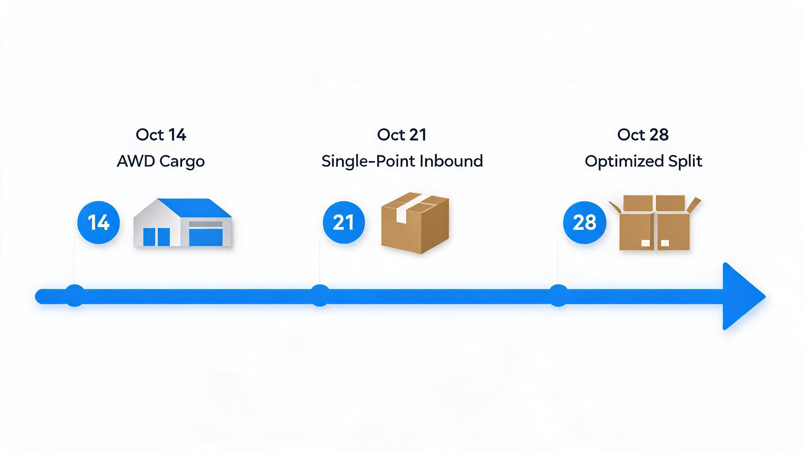
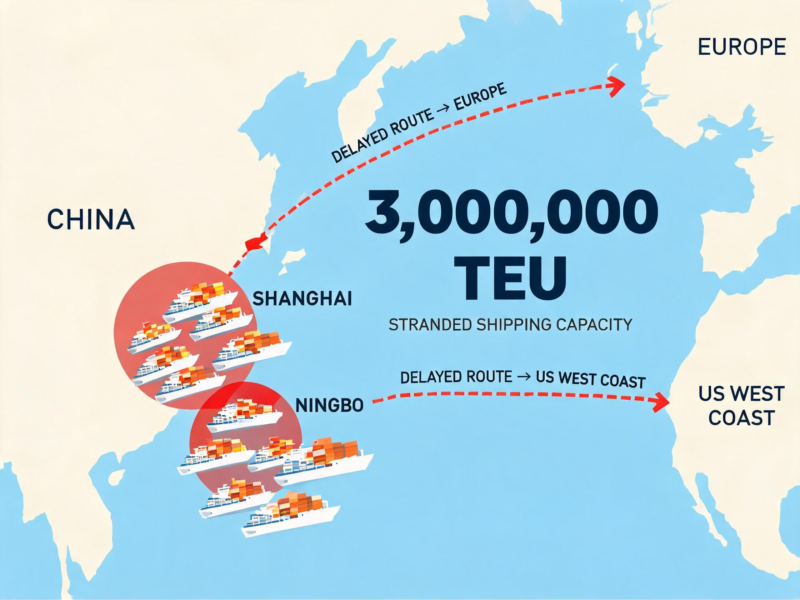

海外仓市场资讯简报
本期核心判断：亚马逊黑五/网一FBA入库截止已精确化——AWD货件10月14日、单点入仓10月21日、优化拆分10月28日，距本期发布仅剩约19天；叠加亚洲港口拥堵滞留约300万TEU运力、海运时效延长，"先入三方仓、10月中下旬分批调拨FBA"是本周期最紧迫、最直接的销售抓手。运价侧美西结算运价已现回落信号（10/5 SCFIS美西4,219.59点）；NRF 10月8日更新预测上调10月进口至225万TEU（+8.5%），旺季延长。欧盟小额包裹申报费11月起从3欧元提至5欧元/票，欧洲本土仓需求确定性上升；速卖通10月19日年度峰会发布双11政策，新一轮备货高峰将至。
00本周值得做的判断
每条判断均给出理由、影响与下一步，可直接用于销售与业务沟通。
01销售行动：FBA入库截止精确化 + 港口拥堵延长时效，"三方仓缓冲+调拨"价值进一步上升
- 理由
- 亚马逊2026Q4旺季手册明确黑五/网一FBA入库截止：AWD货件10月14日、单点入仓10月21日、优化拆分10月28日，运营中心9-10月集中收货[1]；同时Sea-Intelligence数据显示亚洲港口拥堵导致全球约300万TEU运力滞留（上海、宁波受影响最重，中国主要港口准班率一度降至12%-17%），业内预计恢复需7-10个月、或持续至2027年[21]；美线即期运价仍在高位（9/30美西7,578美元/FEU）[2]。
- 影响
- 海运在途时间拉长 + 入库截止临近，未完成备货的卖家进入最后窗口期，三方仓"拆柜→暂存→分批调拨FBA"从效率选择变成风险对冲选择，10月最有确定性的业务量来源。
- 下一步
- 销售以"距优化拆分入库截止仅剩约19天 + 港口拥堵时效延长"双话术，向重点客户推送"先入三方仓、10月中下旬分批调拨FBA"方案，并同步确认旺季库容预留。

02业务信号：欧盟合规成本再升级，欧洲本土仓需求确定性上升
03竞对观察：上市系+平台系持续扩仓，差异化竞争空间收窄
01目标客户动态：黑五时间表收紧，平台本地化履约权重持续上升
事实 亚马逊2026Q4旺季手册（中文版）：黑五/网一FBA入库截止为——AWD货件10月14日、单点入仓10月21日、亚马逊优化拆分10月28日；运营中心将在9月和10月集中接收货件[1]。
事实 上海航交所数据（9/30当周）：上海→美西即期运价7,578美元/FEU（+1.5%）、上海→美东10,528美元/FEU（+0.3%），美西-美东价差2,950美元；欧洲航线持续疲软[2]。
事实 速卖通2026年度峰会定档10月19-20日（深圳），主题"全球皆主场"，将首发年度战略与双11大促政策，主推品牌化、本地化、AI化、合规化四条主线[11]。
事实 Shopee发布2026年10月海外仓官方头程费率调整，适用于菲律宾、泰国、马来西亚、新加坡站点，10月1日起执行[23]。

平台侧（亚马逊截止日期明确 + 速卖通峰会临近）与卖家侧（旺季备货冲刺）共同把"10月中下旬"定义为最后的调拨窗口；港口拥堵又给在途时效加了不确定性。对三方仓：10月中下旬是调拨与出库高峰，库容策略应优先保证"可周转的调拨库容"，而非一味追求满仓。
02竞争对手动态：菜鸟欧洲加速、上市系持续扩仓、行业自动化基准抬高
事实 菜鸟+4PX海外供应链：8月20日在法国巴黎、德国曼海姆连开两座新仓（支持大件存储与本地配送）；曼海姆仓超2万㎡并预留4万㎡扩展空间、巴黎仓签下9年租约；自4月以来在欧洲已新开7座仓库（荷兰/法国/西班牙/波兰/英国/德国）[7]。
事实 菜鸟全球供应链已在18个国家和地区运营超50个海外仓，服务汽配、家居、家电、家具等多个行业出海[8]。
事实 谷仓海外仓：全球海外仓总面积突破360万㎡，正规模部署第四代大型全流程自动化物流中心；9月24日宣布TikTok Shop本地托管开放招商，迎接欧洲黑五[9]。
事实 EDA集团控股（HK2505）：下一阶段持续扩张欧美高标准自营仓网络，全力推进印尼买地建仓项目，并将AI/自动化技术规模化落地[10]。
扩仓主体已形成"上市系+平台系+国资智能仓"三股力量，自动化正在成为行业效率基准，欧美主流市场正面拼规模的空间很小。差异化应落在：平台官方仓的溢出需求承接（速卖通德国仓仓容告急是直接案例）、大件与特殊品类处理、以及欧洲次核心市场布局。
03政策速览：欧盟申报费11月起再上调，低值免税红利全面退出
中美欧三条线的低值免税红利均已退出，"本土仓备货"成为所有市场的确定性主线。对三方仓而言，合规申报能力（欧盟IOSS/VAT代缴、美国关税垫付与IOR服务）正从增值服务变为获客必备项——建议纳入Q4统一报价话术。
① 亚洲港口拥堵若持续至2027年，将系统性拉长海运时效，"时效承诺"类服务（如限时达）需预留冗余；② 欧盟11月起申报费上调至5欧元/票的具体执行细则（IOSS代缴范围、快递商征收方式）需持续核实；③ 速卖通10月19日峰会发布的双11政策可能带来新一轮备货高峰，建议及时跟进。
04数据面板
运价与进口量：即期高位盘整、结算运价现回落信号；旺季延长至四季度
| 指标 | 最新值 | 数据日期 | 变化 |
|---|---|---|---|
| 上海→美西即期运价 | 7,578 USD/FEU | 2026-09-30 | 节前 +1.5%，高位盘整 |
| 上海→美东即期运价 | 10,528 USD/FEU | 2026-09-30 | 节前 +0.3%，维持高位 |
| 美西-美东价差 | 2,950 USD | 2026-09-30 | 高位，提示美东/美中转口仍有利润空间 |
| SCFI 综合指数 | 3,687.83点 | 2026-09-18 | +25.65点（9/30当周高位盘整） |
| SCFIS 美西航线（结算） | 4,219.59点 | 2026-10-05 | 环比约 -9.0%（较9/28的4,638.32点回落） |
| SCFIS 欧洲航线（结算） | 2,412.18点 | 2026-10-05 | 环比 -1.2%，欧线持续疲软 |
| 美国主要港口9月进口（NRF，10/8更新） | 228万TEU | 2026-09 | 同比 +8.2%（较9月初预测231万下调） |
| 美国主要港口10月进口（NRF，10/8更新） | 225万TEU | 2026-10 | 同比 +8.5%（较9月初预测211万上调） |
| 美国主要港口11-12月进口（NRF预测） | 200 / 202万TEU | 2026-11/12 | 同比 -1% / +0.6%，旺季延长 |
即期运价高位盘整、但结算运价（SCFIS美西）已现回落信号，后续现货涨价动能或减弱；NRF大幅上调10月进口预测至225万TEU（+8.5%），叠加亚洲港口拥堵，Q4美线"货量高位、时效紧张"格局明确。[2][18][19][20]
附本期制作说明
- 目标读者
- 公司管理层（方向判断参考）+ 海外仓业务销售/运营一线（报价与获客参考），分层阅读：看顶部摘要与判断即可，细节按板块查阅。
- 更新频率
- 每周一期（每周一10:00自动生成草稿、人工审核后发布）；本期为每周试运行第3期（含10月9日数据更新），试用期至2026年11月底。
- 制作方式
- AI 自动检索公开信息 → 按固定模板生成草稿 → 小组人工审核事实、来源与措辞 → 发布。所有数据均附来源与日期。
- 分工
- 甲（客户线）：目标客户动态 + 数据面板；乙（竞对线）：竞争对手动态 + 政策速览；双方互审对方板块并注明借鉴内容。
- 内容边界
- 正文区分【事实】（附来源）与【判断】（小组分析）；不涉及公司内部经营数据；分析观点不代表公司立场。
- 反馈
- 欢迎目标读者提出改进意见（内容、频率、格式均可），用于10月中旬至11月的试用优化。